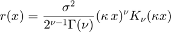
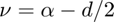
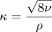
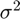
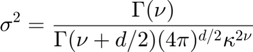

function [r,nu,kappa,sigma2Helmholtz,Cov,Realisation]=Matern(alpha,rho,d,x,sigma2,DoPlots)
[r,nu,kappa,sigma2,Cov,Realisation]=Matern(alpha,rho,d,x,sigma2,DoPlots)
Calculates the Matern covariance defined as

Inputs:
alpha : alpha/2 is the exponent in the fractional Helmholtz eqaution rho : distance where correlation falls to 0.1 d : spatial dimention
sigma2 : marginal variance, (optional input) DoPlots : plots of realisations if set to true (optional input)
Outputs:
nu : nu=alpha-d/2;
kappa : the wave-number inthe Helmholtz equation
sigma2Helmholtz : marginal variance of the Helmholtz equation for the given
kappa and alpha values
Cov : covariance matrix with the marginal covariance
sigma2, if sigma2 is provided, otherwise with the
marginal covariance sigma2Helmholtz
Realisation : One realisation of a Matern process.
for d=2 (i.e. two spatial dimentions) we have nu=2-1=1
rho=sqrt(8 nu)/kappa then given rho

If sigma2 is not given on input, it is calculated based on expression in: Lindgren, F., Rue, H., & Lindström, J. (2011).
Note that if  is specified, the marginal variance of the Helmoltz equation with the specified alpha, rho and dimention will still be sigma2 as given

by the equation above!
Only input sigma2 if you interested in returning and using the covariance matrix Cov and the Realisation.
Example :
d=2; alpha=2 ; rho=4e3 ; dist=linspace(0,1e4,1e3) ; [r,nu,kappa,sigma2]=Matern(alpha,rho,d,dist); figure ; plot(dist,r) ; xlabel('distance') ; ylabel('Matern') title(['$$ \sigma^2= $$',num2str(sigma2),' $$ \rho=$$',num2str(rho)],'interpreter','latex')
if nargin<6 DoPlots=false; end Cov=[] ; Realisation=[] ; % this gives a correlation of about 0.1 at the distance r nu=alpha-d/2; % ie nu=1 for alpha=2 and dimention=2 kappa=sqrt(8*nu)/rho; sigma2Helmholtz=gamma(nu) / ( gamma(nu+d/2)*(4*pi)^(d/2)*kappa^(2*nu)); if nargin<5 % Eq 1 sigma2=sigma2Helmholtz ; end x=kappa * x ; % this sigma2 should be referred to as sigma^2 % some other sources appear to use a different defintion of rho % for example rho in https://en.wikipedia.org/wiki/Mat%C3%A9rn_covariance_function % appear to be 1/2 of the rho I use here % My notation is based on: % Lindgren, F., Rue, H., & Lindström, J. (2011). % An explicit link between Gaussian fields and Gaussian Markov random fields: the stochastic partial differential equation approach. Journal of the Royal Statistical Society: Series B (Statistical Methodology), 73(4), 423–498. https://doi.org/10.1111/j.1467-9868.2011.00777.x r = real(sigma2 * x.^nu .* besselk(nu,x) / (2^(nu-1)*gamma(nu)) );
if nargout>4 || DoPlots F = griddedInterpolant(x,r) ; D=ndgrid(x,x) ; D=abs(D-D') ; Cov=F(D) ; R=sqrtm(Cov); Realisation=R*randn(numel(x),1) ; if DoPlots figure; for I=1:3 y=R*randn(numel(x),1) ; plot(x/1000,y) ; ylabel('Matern realisation') ; xlabel('distance (km)') hold on fprintf(' Expected variance %f \t estimated variance %f \n ',sigma2,var(y)) end title(sprintf(' A few examples of Matern realisations with rho=%i and sigma=%i',rho,sigma2)) end end
end